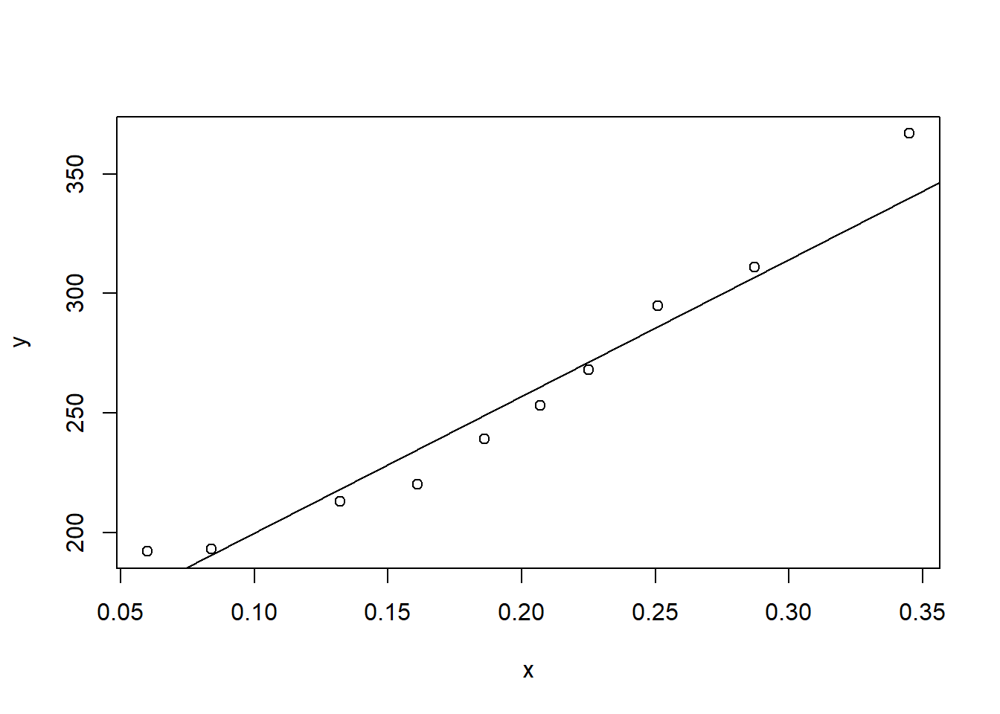
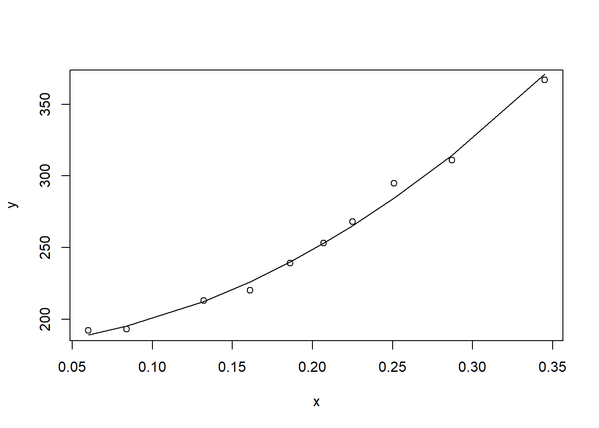
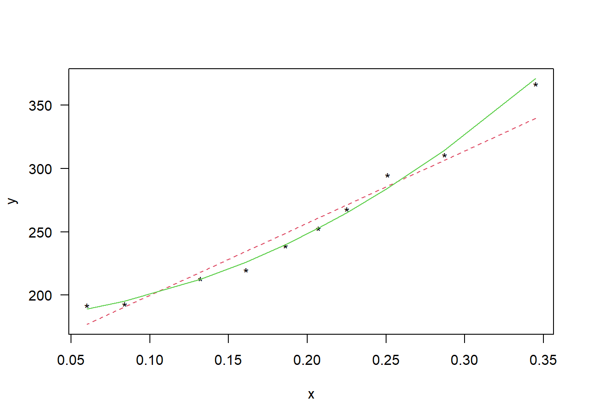

Chapter 8 일반화 가중회귀모형
8.1 일반화 회귀모형
- \(k\)개 설면변수 \(X_1, X_2, \ldots, X_k\)와 반응변수 \(Y\)에 대한 다중선형회귀모형
\[ \mathbf{Y}=\mathbf{X}\beta+\epsilon \]
오차벡터 \(\epsilon\)은 \(E(\epsilon)=0\), \(Var(\epsilon)=\sigma^2\mathbf{I}\)
오차항이 서로 독립이 아니고 공분산을 갖는 경우가 발생할 수 있으며, 이런 경우 최소제곱추정량은 불편추정량이 될 수 있으나 최소분산성을 만족하지 않게 되므로 향상된 추정량을 찾을 수 있음
일반화 회귀모형으로 오차항이 공분산을 갖는 다중선형회귀 모형
\[ \mathbf{Y}=\mathbf{X}\beta+\epsilon \]
오차벡터 \(\epsilon\)은 \(E(\epsilon)=0\), \(Var(\epsilon)=\sigma^2\Sigma\)
여기서 \(\Sigma\)는 공분산행렬로 대칭인 양정치행렬임
8.2 최소제곱법을 이용한 모수추정
- 표본데이터로부터 회귀계수를 추정하는 방법 중 가장 널리 이용되는 방법인 오차제곱합을 최소화하는 최소제곱법을 이용하면, 일반화 오차제곱합은 다음과 같이 정의 가능함
\[ RSS(\beta)=(\mathbf{Y-X\beta})'\Sigma^{-1}(\mathbf{Y-X\beta}) \]
- \(RSS(\beta)\)를 최소화하도록 일반화 최소제곱추정량(generalized least squares estimator)은
\[ \hat{\beta}=(\mathbf{X}\Sigma^{-1}\mathbf{X})^{-1}\mathbf{X}\Sigma^{-1}\mathbf{Y} \]
\(Var(\epsilon)=\sigma^2\Sigma\)에 대해 \(\mathbf{C}'\mathbf{C}=\mathbf{CC}'=\Sigma^{-1}(\mathbf{C}^{-1}[\mathbf{C}^{-1}]=\Sigma)\)를 만족하는 대칭행렬 \(\mathbf{C}\)를 구하면 \(\Sigma^{-1}\)의 제곱근행렬 \(\mathbf{C}=\Sigma^{-1/2}\)을 얻을 수 있음
\(\mathbf{C}\)를 이용하여 다시 표현하면
\[ \mathbf{CY}=\mathbf{CX\beta}+\mathbf{C}\epsilon \]
- \(\mathbf{Z=CY}\), \(\mathbf{M=CX}\), \(d=\mathbf{C}\epsilon\)로 놓으면
\[ \mathbf{Z=M\beta}+d \]
- 행렬 \(\mathbf{C}\)에 의해 변환된 오차벡터에 대한 공분산행렬을 구해 보면
\[ Var(d)=Var(\mathbf{C}\epsilon)=\mathbf{C}\{\sigma^2\Sigma\}\mathbf{C}'=\sigma^2\mathbf{C}\{\mathbf{C}^{-1}[\mathbf{C}^{-1}]'\}\mathbf{C}'=\sigma^2\mathbf{I} \]
- 따라서 최소제곱추정량은
\[ \hat{\beta}=(\mathbf{M'M})^{-1}\mathbf{M'Z} \]
- 원래의 \(\mathbf{X}\)와 \(\mathbf{Y}\)로 표현하면
\[ \hat{\beta}=(\mathbf{X}\Sigma^{-1}\mathbf{X})^{-1}\mathbf{X}\Sigma^{-1}\mathbf{Y} \]
실제 데이터 분석을 할 때 행렬 \(\mathbf{C}\)를 구해 최소제곱법을 이용하는 것이 편리하며 여기에 제곱근행렬 \(\mathbf{C}\)를 구하는 계산이 중요함
오차항이 서로 독립이며 분산이 서로 다른 경우에 대해 회귀계수벡터를 구하기 위해 오차항의 공분산행렬을 \(\Sigma=\mathbf{W}^{-1}\)로 놓으면
\[ \mathbf{W}^{-1}=\begin{pmatrix} 1/w_1 & & & 0\\ & 1/w_2 & &\\ \vdots & & \ddots& \vdots\\ 0&&&1/w_n \end{pmatrix} \]
- \(\Sigma^{-1}\)의 제곱근행렬 \(\mathbf{C}\)를 구하면
\[ \mathbf{C}=\begin{pmatrix} \sqrt{w_1} & & & 0\\ & \sqrt{w_2} & &\\ \vdots & & \ddots& \vdots\\ 0&&&\sqrt{w_n} \end{pmatrix} \]
- 그러므로
\[ \mathbf{M}=\begin{pmatrix} \sqrt{w_1} & \sqrt{w_1}X_{11}&\cdots & \sqrt{w_1}X_{1k}\\ \sqrt{w_2}& \sqrt{w_2}X_{21} &\cdots &\sqrt{w_2}X_{2k}\\ & & \ddots& \\ \sqrt{w_n}&\sqrt{w_n}X_{n1}&\cdots&\sqrt{w_nX_{nk}} \end{pmatrix} \]
\[ \mathbf{Z}=\begin{pmatrix} \sqrt{w_1}Y_1 \\ \sqrt{w_2}Y_2 \\ \vdots \\ \sqrt{w_n}Y_n \end{pmatrix} \]
- 따라서 회귀계수는
\[ \hat{\beta}=(\mathbf{M'M})^{-1}\mathbf{M'Z} \]
- 이와 같이 변수변환을 이용하여 가중회귀모형을 적합할 수 있음
8.3 R 활용 가중회귀분석
Example 1
- physics data
x<-c(0.345,0.287,0.251,0.225,0.207,0.186,0.161,0.132,0.084,0.060)
y<-c(367,311,295,268,253,239,220,213,193,192)
w<-c(17, 9, 9, 7, 7, 6, 6, 6, 5, 5)
a<-lm(y~x, weights=w^(-1))
plot(x,y)
abline(a)
a2<-lm(y~x+I(x^2), weights=w^(-1) )
plot(x,y)
lines(x,a2$fitted.values)
matplot(x, cbind(y,a$fitted.values, a2$fitted.values),
type="pll", pch="*", lty=c(1,2), ylab="y", las=1)
Example 2
McIntosh 사과나무
오차항의 분산은 가지 수 \(n\)에 의존존
load('./dataset/apple.rda')
attach(apple)
a<-lm(ybar~day, weights=n)
summary(a)##
## Call:
## lm(formula = ybar ~ day, weights = n)
##
## Weighted Residuals:
## Min 1Q Median 3Q Max
## -6.053 -2.570 -1.056 3.145 8.382
##
## Coefficients:
## Estimate Std. Error t value Pr(>|t|)
## (Intercept) 10.019139 0.412451 24.29 <2e-16 ***
## day 0.191322 0.006338 30.19 <2e-16 ***
## ---
## Signif. codes: 0 '***' 0.001 '**' 0.01 '*' 0.05 '.' 0.1 ' ' 1
##
## Residual standard error: 3.876 on 50 degrees of freedom
## Multiple R-squared: 0.948, Adjusted R-squared: 0.9469
## F-statistic: 911.2 on 1 and 50 DF, p-value: < 2.2e-16plot(day,ybar)
abline(a)
detach(apple) Example 3
- 1947년부터 1962년까지 GNP와 인구수, 취업자 수
data(longley)
attach(longley)
g<-lm(Employed ~ GNP + Population, data=longley)
summary(g)##
## Call:
## lm(formula = Employed ~ GNP + Population, data = longley)
##
## Residuals:
## Min 1Q Median 3Q Max
## -0.80899 -0.33282 -0.02329 0.25895 1.08800
##
## Coefficients:
## Estimate Std. Error t value Pr(>|t|)
## (Intercept) 88.93880 13.78503 6.452 2.16e-05 ***
## GNP 0.06317 0.01065 5.933 4.96e-05 ***
## Population -0.40974 0.15214 -2.693 0.0184 *
## ---
## Signif. codes: 0 '***' 0.001 '**' 0.01 '*' 0.05 '.' 0.1 ' ' 1
##
## Residual standard error: 0.5459 on 13 degrees of freedom
## Multiple R-squared: 0.9791, Adjusted R-squared: 0.9758
## F-statistic: 303.9 on 2 and 13 DF, p-value: 1.221e-11cor(GNP, Population)## [1] 0.9910901cor(residuals(g)[-1],residuals(g)[-16]) ## [1] 0.3104092library(nlme) # nonlinear model
gl<-gls(Employed~GNP+Population,correlation=corAR1(form=~Year), data=longley)
#generalized least squares method
summary(gl)## Generalized least squares fit by REML
## Model: Employed ~ GNP + Population
## Data: longley
## AIC BIC logLik
## 44.66377 47.48852 -17.33188
##
## Correlation Structure: AR(1)
## Formula: ~Year
## Parameter estimate(s):
## Phi
## 0.6441692
##
## Coefficients:
## Value Std.Error t-value p-value
## (Intercept) 101.85813 14.198932 7.173647 0.0000
## GNP 0.07207 0.010606 6.795485 0.0000
## Population -0.54851 0.154130 -3.558778 0.0035
##
## Correlation:
## (Intr) GNP
## GNP 0.943
## Population -0.997 -0.966
##
## Standardized residuals:
## Min Q1 Med Q3 Max
## -1.5924564 -0.5447822 -0.1055401 0.3639202 1.3281898
##
## Residual standard error: 0.689207
## Degrees of freedom: 16 total; 13 residualintervals(gl)## Approximate 95% confidence intervals
##
## Coefficients:
## lower est. upper
## (Intercept) 71.18320460 101.85813305 132.5330615
## GNP 0.04915865 0.07207088 0.0949831
## Population -0.88149053 -0.54851350 -0.2155365
##
## Correlation structure:
## lower est. upper
## Phi -0.4432383 0.6441692 0.9645041
##
## Residual standard error:
## lower est. upper
## 0.2477527 0.6892070 1.9172599